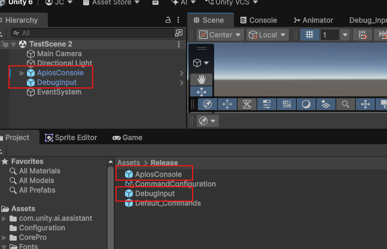

Getting Started
New to Aplos Console? Start here.
Adding the console to your scene
There are only two primary objects you need to get started, and both ship as prefabs in Assets/Release. Drag each one into your scene:
- AplosConsole — the console itself, complete with its own canvas. It bundles
AplosConsole, the console view, theAplosWindowManager, and theAplosSettingsManager, so no further wiring is needed. - DebugInput — the input object. It carries the
AplosInputManager, aUnityInputSystemAdapter, theDebugKeyboardAndMouseInputBindingmapper for keyboard & mouse, and aConsoleCursorHandler.

Above: both prefabs placed in the scene, alongside the EventSystem.
Additional scene dependencies for input:
- EventSystem — a standard Unity GameObject (GameObject → UI → Event System). The console is uGUI-driven and relies on it to focus the input field and route clicks, so without one the console renders but does not respond.
What else is in the Release folder
The other two assets are already wired up for you, but it is worth knowing what they do:
- CommandConfiguration — an
AplosCommandConfigurationasset holding the prefabs the console needs, including its pre-loaded commands. Both prefabs above already reference it, on theAplosConsolecomponent'sCommandConfigurationfield and theAplosInputManagercomponent'sSettingsfield. - Default_Commands — a sample
AplosConsoleCommandConstructorproviding a set of scene commands, such asscene_log_performanceandscene_freeze. It is referenced by CommandConfiguration, which is how those commands reach the console at load.
Your first command
- Enter play mode.
- Press the
`(backquote) key to open the console. - The console opens on its default list, showing only the built-in commands.
- Type
helpand submit it to reveal every registered command, including those from Default_Commands. - Select a command and submit it — either by double-clicking its row, or by pressing the Submit button.
Where to go next
- Using the Console — a tour of each part of the console window.
- Adding Commands — how to author your own commands and pre-load them.
- Setting up Input — how the input components fit together, and how to support other control schemes.
- Using the Settings — how to expose your own fields as tracked settings.